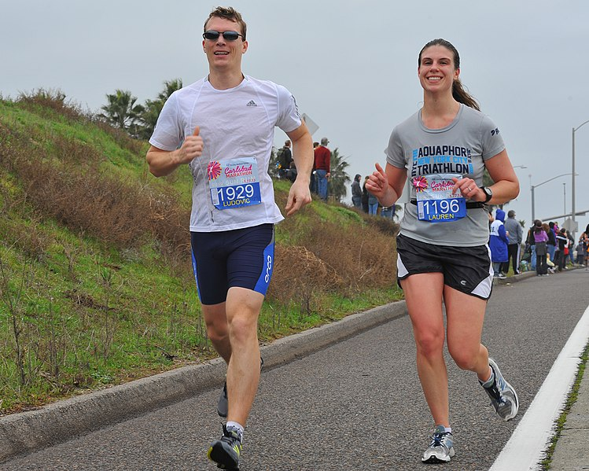

Principales beneficios del running
El running es una una de las actividades físicas más completas que se puede practicar. Son numerosos los beneficios para la salud, no solo física sino también mental.
Permite perder y controlar el peso
Es un ejercicio aeróbico por lo que ayuda a aumentar el gasto calórico del día.
Ayuda a fortalecer los huesos
La práctica habitual del running contribuye a reducir el riesgo de padecer osteoporosis ya que se aumenta la densidad ósea. También disminuye el riesgo de fracturas.
Reduce el riesgo de contraer enfermedades
Está demostrado que quienes practican el running son menos propensos al colesterol alto, hipertensión, obesidad y diabetes.
Regenera la masa muscular
Con el running se tonifican los músculos tanto de las piernas como del abdomen, la espalda e incluso los brazos.
Mejora el sistema cardiorrespiratorio
El sistema cardiorrespiratorio es el mayor beneficiado cuando se practica el running ya que se fortalece el miocardio y se mantiene la presión arterial.
Favorece el descanso.
Cuanto más activos estemos durante el día mejor podremos conciliar el sueño. Por eso practicar running hará que estemos más cansados cuando lleguemos a la cama y nos será más fácil dormir.
Ayuda a combatir el estrés y la ansiedad
Correr hace que segreguemos endorfinas, hormonas que nos producen una sensación de felicidad de esta forma disminuyen los niveles de estrés y ansiedad.
Ayuda a aumentar la autoestima
Además de aportar más agilidad a nuestro cuerpo también se notan cambios a nivel estético. Verse bien y con energía es un elemento muy importante para afianzar la confianza en uno mismo.
Otro de los beneficios del running es que se trata de una actividad perfecta para socializar porque aunque corras solo permite compartir entrenamientos y experiencias ya que mucha gente lo practica.
Es más importante señalar que antes de comenzar esta práctica deportiva es necesario hacer un análisis de tu situación física y mental y marcarte una metas iniciales asumibles para no sufrir ninguna lesión por sobreesfuerzo.

Foto de Chris Hunkeler disponible en Wikimedia Commons
.jpg){kind=link}